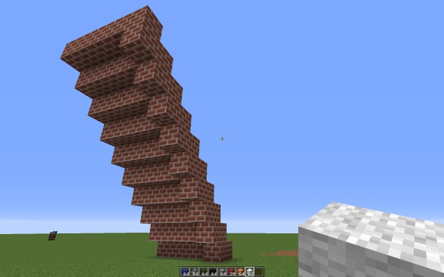
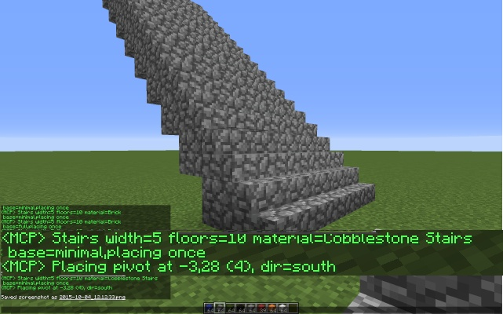
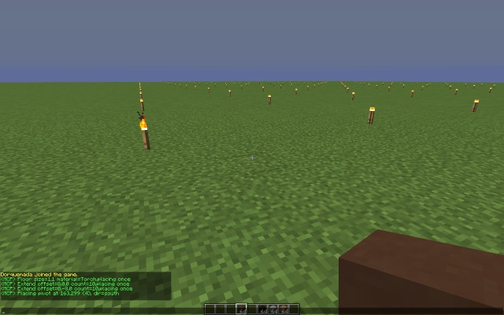
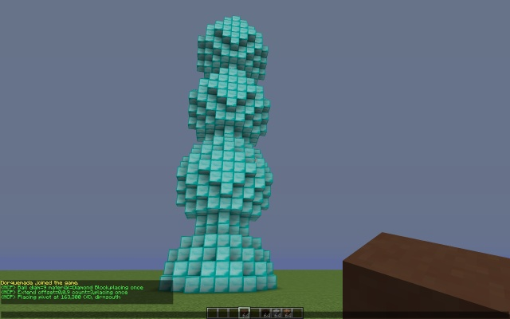
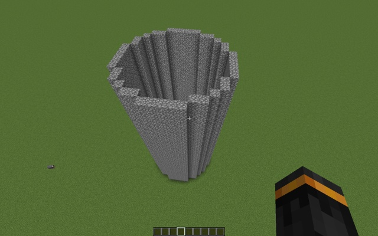
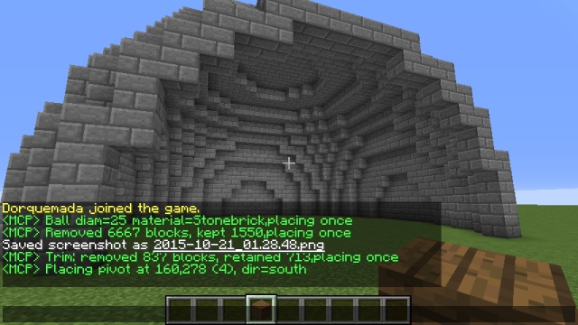

This chapter covers the building process in more detail, describes the available building functions and provides tips for building in difficult conditions.
When the building functions are used you will be dealing with two things called buildplan and buildtask.
A buildplan is like a blueprint of a structure. It defines a list of blocks, including their meta values (which define subtype and/or orientation for some block types). The block coordinates within the buildplan are relative to a block at 0,0,0 called pivot. The pivot block may be itself a part of the buildplan or not - it does not matter. The pivot however represents the "origin" of the buildplan
A buildplan can be created using one of the parametric building functions, imported from external files, and manipulated in various ways.
In order to start actual building, you need to start a buildtask from the buildplan by placing its pivot somewhere in the world. Both position and direction of the placement define how the blocks will be placed. The block coordinates are translated from the relative to the world coordinates. The orientation-dependent meta values are rotated to match the new direction. In the buildplan, the metas are encoded as if the pivot direction is towards north. When pivot is placed, you define the new direction.
The actual placement may be done either by specifying explicit coordinates and direction as parameter, or more conveniently by placing a block. The coordinates and the direction of the placement are taken as pivot parameters, and the placement itself is not forwarded to the server.
Some other parameters used in the various commands behave that way - you can either specify them explicitly, or omit them, and make MCBuild use some defaults derived from your current state. One such parameter is the material specification - if you omit it, MCBuild will just use the block type you are currently holding.
In order to have a quick example, how it works, try following:
You may have noticed that if you break the blocks you just built without canceling, they will be immediately rebuilt. This is because your active buildtask constantly checks if there are buildable blocks in vicinity that are unoccupied and will attempt to place blocks there.
In order to be built, blocks need to have adjacent blocks already in place. Most full blocks without specific orientation can be placed on any of the adjacent surfaces, but certain blocks require a certain direction to be placed in order to obtain correct orientation. Ultimately, the player must click once of the suitable points at a suitable face while facing a suitable direction.
While a buildtask is active, MCBuild constantly checks which blocks fulfill these conditions and can be placed, but it is the task of the player to navigate around the structure to reach all possible points
MCBuild will automatically fetch the necessary materials from your inventory into the hotbar slots 3-7 and use them to build. If you're building in creative mode, that works as well, but you need to have all materials you are using in your survival inventory - creative block selection is not supported.
Before we can review the various build commands available, we need to understand how MCBuild is parsing parameters to its functions. The parameter parsing is designed such way that the user will have to type as little as possible while avoiding ambiguity. Many option names can be shortened or omitted, some parameter parts have default values, and as already mentioned, some parameters can be omitted altogether, making MCBuild using suitable defaults derived from your current gamestate.
There are two types of parameters - named parameters and flags.
The flag-type parameters are always preceeded by a minus sign, but may have long or short name. They are simple switches, enabling some option when specified.
Named parameters have the general format name=value. If a command expects a certain named parameter, if will first look for the general form, using the full or one of the shortened names of the parameter. If not found, a named parameter may have a default position, in which case the name can be omitted, and only the value used as parameter. If that is not found, or the parameter has no default position, it may have a way to be derived from the game state. For example, the parameter defining a position of the pivot can be obtained when player places a block.
Named parameters in their full form (i.e. with the name), and flags can be specified in any order on the command line. Named parameters without a name however must be specified in their default order.
The values of the named parameter may have many different forms. So, for example a material specification can be done by numeric block ID, or hexadecimal ID, or even by name. It may also have an optional meta value, which can be also numeric or a string.
The following example illustrates how it works for the command #build stair. This command creates a flight of stairs, it has a mandatory parameter size and optional parameter the material, as well as a few flags. The following list shows examples what the user can specify and how MCBuild will interpret this.
#build stairs size=5,20 material=brick
This creates a buildplan of stairs, 5 blocks wide, and 10 blocks high, made of brick blocks and the default minimal base - one column of blocks under the stairs to provide connection between the steps).
#build stairs m=brick s=5,10
This will create exactly the same, but the order of the parameters is arbitrary (since they both have proper names) and I used the short names.
#build stairs 5,10 brick
This is an even shorter form that omits the names and therefore the parameters are interpreted in their default order. It is assumed that "5,10" is the size parameter, and "brick" is the material.
#build stairs brick 5,10
This however will give you an error - the parameters have no names so the default order is assumed, and "brick" cannot be parsed as size.
#build stairs m=brick 5,10
This however works - the material parameter is identified by the explicit name, while the size as the first unnamed parameter
#build stairs brick s=5,10
This works as well - as long as the ambiguity is resolved somehow, argument parsing will identify the necessary parameters.
#build stairs -e wooden_stairs -f s=5,10
Flags can be placed anywhere - since they have a unique name and can be identified by the minus sign. This particular command will use wooden stairs block, make a full base (i.e. base extends over the entire width of the stairs) and make sure exactly same block is used for the base (otherwise MCBuild will try to use matching wooden planks)

#build stairs 5,10
In this case we don't specify the material. MCBuild will assume we want to build using the block we currently hold in our hand. If the player holds nothing, or it's an item that cannot be placed as a block, you will receive an error.
As you may see - in this case the cobblestone stairs was used for building the stairs, since the player held it in hand and the cobblestone block was used for the base.
A reference for some common parameter value formats used in multiple commands.
Material can be specified my its decimal or hexadecimal block ID, or by symbolic name. For slabs you can also specify whether you want the upper or the lower form.
Names: material,mat,m
As example, the following material formats represent stone and sandstone slabs in different positions. The block ID for stone slabs is 0x2C / 44, but block meta is additionally required to define exact material and position. By default, meta=0 will be assumed, which corresponds to the plain stone slabs in lower position. Sandstone stone slabs have meta 1 for the lower (default) and 9 for the upper position. The exact type can be controlled by the explicit meta value or in combination of the meta value + upper flag
| Example specification | Description | Resulting block |
|---|---|---|
| 44 | Decimal ID | Stone slab (lower) |
| 0x2c | Hex ID | |
| stone_slab | Name | |
| 44u | Decimal ID+upper | Stone slab (upper) |
| 0x2c:u | Hex ID+upper | |
| stone_slab::u | Name+upper | |
| 44:1 | Decimal ID+meta | Sandstone slab (lower) |
| 0x2c:1 | Hex ID+meta | |
| stone_slab:1 | Name+meta | |
| stone_slab:sandstone | Name+subname | |
| 44:9 | Decimal ID+meta | Sandstone slab (upper) |
| 0x2c:9 | Hex ID+meta | |
| stone_slab:9 | Name+meta | |
| 44:1u | Decimal ID+meta+upper | |
| 0x2c:1u | Hex ID+meta+upper | |
| stone_slab:1u | Name+meta+upper | |
| stone_slab:sandstone:u | Name+subname+upper |
Examples of use:
Floor made with oak woodplanks
#build floor size=10,10 material=5
Floor made with spruce woodplanks
#build floor size=10,10 material=5:1
A ball made from red wool
#build ball d=7 m=wool:red
Replace all obsidian in a buildplan with diamond blocks
#build replace obsidian diamond_block
Create a cobble slab floor with slabs in upper position
#build floor 10,10 0x2c:4u
The pivot parameter defines a specific absolute world coordinates plus direction. As the name suggests, it defines the exact placement of a pivot block in the world and is thus used with commands lice place and scan
Names: pivot,pv,p,from,pos,at
Following table shows various pivot spec formats
| Specification | Examples | Description |
|---|---|---|
| x,z,y,dir | 123,456,64,e | Absolute coordinates and direction |
| x,z,y | 123,456,64 | Absolute coordinates. As direction the current player's direction is assumed |
| x,z,dir | 123,456,n | Absolute horizontal coordinates and direction. Player's current y coordinate (at feet level) is assumed for Y-coordinate |
| x,z | 123,456 | Absolute horizontal coordinates. Y-coordinate and direction is assumed from the player's Y-coordinate and look direction |
| dist | 0 | Distance to the pivot point. The direction corresponds to player's look direction, the coordinates are assumed for a block that is dist blocks in front of the player. Value 0 would correspond to the block where the player stands right now (the feet position). Value of 1 would mean a block right in front of the player |
Examples of use:
Place a pivot block at postion 1000,500, y=100, direction east
#build place pivot=1000,500,100,e
Place a pivot block at postion 1000,500, direction south, at the same level the player is standing
#build place pv=1000,500,s
Place a pivot right in front of the player
#build place 1
Scan an area of 10x10x5 blocks, while player is standing right at the spot of the pivot
#build scan 0 10,10,5
This class of commands will create a buildplan of simple generic structures, usually made from a single type of material and with size specified as parameter.
Calling a parametric build command will replace your current buildplan with a generated one, but the current buildtask will be cancelled only upon placement. By default, you will immediately enter the "#build place once" mode of placement (depending on your placemode setting), i.e. placing a block somewhere will specify the pivot point of your new structure and the building will start.
All parametric build commands accept the parameter material in one of the supported formats. If you omit the explicit material specification, the material you currently hold in your hand will be used. If your hand is empty of you hold a non-placeable item, you will receive an error.
Flat rectangular floor. rect variation takes exactly same parameters but creates only the border.
Format:
#build floor size=W[,L] [material=matspec]
#build rect size=W[,L] [material=matspec]
Parameters:
Pivot: leftmost nearest block
Examples and usage tips:
#build floor size=10,5 material=cobblestone - 10x5 cobblestone floor
#build floor 100 dirt - 100x100 dirt floor - useful for quickly fixing holes in the ground or flattening the landscape
#build floor 1,1000 - A narrow 1x1000 floor made of whatever material you are holding - e.g. as a narrow bridge/walkway or to automatically fix the holes at your path as you walk - e.g. on a nether tunnel.
#build floor 50x30 wooden_slab:birch:u - 50x30 floor made of birch slabs in upper position - e.g. for covering the ceiling.
#build rect 10 m=fence - 10x10 rectange made of fence - e.g. making an animal pen.
Flat disk, or ring (i.e. border only). The ring is obtained by applying the 2D hollow function to the disk of the same diameter
Format:
#build disk diameter=D [material=matspec]
#build ring diameter=D [material=matspec]
Parameters:
Pivot: center
Examples and usage tips:
#build ring d=15 m=cobblestone - cobblestone ring with diameter 15
#build disk 5 - disk of diameter 5 made with whatever block you were holding in your hand
Ball, or hollowed sphere of a given diameter. The sphere is obtained by generating the ball of the same diameter and applying 3D hollow function to it.
Format:
#build ball diameter=D [material=matspec]
#build sphere diameter=D [material=matspec]
Parameters:
Pivot: center
Examples and usage tips:
#build sphere d=15 m=cobblestone - cobblestone sphere with diameter 15
#build ball 5 - ball of diameter 5 made with whatever block you were holding in your hand
A flight of stairs with an optional base (to allow building over open space. If you choose a stairs-type block as material, the meta values will be adjusted to create correct steps and the base blocks will be created using a matching material (i.e. cobblestone blocks for the cobblestone stairs), unless -e option specified.
Format:
#build stairs size=W,H [material=matspec] [-n|m|f] [-e]
Parameters:
Pivot: leftmost bottom
Examples and usage tips:
#build stairs 3,10 -f - stairs 3 blocks wide and 10 steps high, full base, made with whatever material you are holding
#build stairs 3,10 cobblestone_stairs - cobblestone stairs using stairs blocks
A scaffolding with given width and number of levels build out of blocks of a single type (dirt by default). If the -l option specified, an alternative design using ladders will be created. The standard-design scaffolding screates a simple stairs allowing you to climb it. The scaffolding is made at least 7 blocks wide. The floors are 3 blocks high.
Format:
#build scaffolding size=W,H [material=matspec] [-l]
Parameters:
Pivot: leftmost bottom
Examples and usage tips:
#build scaf 15,5 -l - scaffolding 15 blocks wide and 5 floors high
This section describes functions that perform various manipulations on the buildplan. The functions require an existing and non-empty buildplan. They will modify the buildplan only and not your current buildtask.
Extend the buildplan by replicating it a number of times and placing the copies at an offset. The offset may be specified explicitly, or by specifying the extension direction, in which case the copies will be placed next to each other or stacked. If any blocks of a copy overlap the previously existing blocks they will replace these.
Format:
#build extend offset=x[,z[,y]]|dir [count=n]
Paramaters:
Pivot: postion of the original pivot is retained
Examples and usage tips:
#build floor 1 torch:5
#build extend o=8 c=10
#build extend o=0,-8 c=10
Create a 10x10 grid of torches 8 blocks apart. Note that we have to use meta=5 when specifying the torch as material to obtain torches standing on the ground.
#build ball 9 diamond_block
#build ext u 3
Create a three dimaond balls stacked on each other. (Pivot is placed on the ground so only a half of the bottom ball is showing)
#build ring 15 cobblestone
#build extend u 30
Create a simple tower by extruding a ring
Hollow out the buildplan structure by removing all blocks completely surrounded by other blocks. The "flat" variant is an analog for flat structures.
Format:
#build hollow [-flat] [-opaque]
Parameters:
Pivot: postion of the original pivot is retained
Replace one material in the buildplan with another. Replacing with Air (id=0) will remove the blocks.
Format:
#build replace material1=matspec material2=matspec
Parameters:
Examples and usage tips:
#build replace cobblestone stonebrick - replace all cobblestone with stonebricks
#build replace stained_glass:red stained_glass:blue - replace red glass with blue glass.
#build replace dirt air - remove all dirt blocks from the buildplan
Pivot: postion of the original pivot is retained
Remove all blocks from the buildplan with coordinates not matching trim specification. You can specify multiple trims which will be applied one by one
Format:
#build trim trimspec ...
Parameters:
Examples and usage tips:
#build ball 25 stonebrick
#build hollow
#build trim y>=0 z<10
Build a cut-out dome
Pivot: postion of the original pivot is retained
Mirror the buildplan along one of the axis.
Format:
#build flip [x|y|z]
Parameters:
Pivot: postion of the original pivot is retained
Tilt/rotate the buildplan around an axis
Format:
#build tilt [x|y|z]
Parameters:
Pivot: postion of the original pivot is retained
Normalize the buildplan so the pivot block is located at the leftmost, bottom, nearest position.
Format:
#build normalize
Pivot: moved to the normalized position.
Shrink the buildplan by factor 2. Works well only for non-hollow builds made of the same material.
Format:
#build shrink
Pivot: moved to the normalized position.